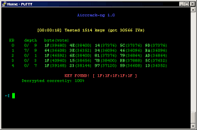

Sebenarnya ada banyak sekali alat-alat peretasan paling populer di KALI Linux, Tapi Kita akan membahas 5 alat-alat peretasan paling populer saja di KALI Linux
1. Metasploit Framework
Metasploit adalah platform penetrasi yang paling terkenal dan luas digunakan untuk menguji kerentanan sistem, mengembangkan exploit, dan melakukan serangan jaringan.
Kelebihan Metasploit
Memiliki antarmuka yang ramah pengguna dan berbagai modul yang kuat untuk pengujian penetrasi.
Mendukung berbagai platform dan sistem operasi target.
Dapat digunakan untuk mengotomatisasi serangan dan mempercepat proses pengujian penetrasi.
Kekurangan Metasploit
Dapat disalahgunakan untuk melakukan serangan yang merugikan jika digunakan oleh pihak yang tidak bermoral.
Memerlukan pemahaman yang cukup mendalam tentang pengujian penetrasi untuk digunakan dengan efektif.
2. Nmap
Nmap adalah pemindai jaringan yang sangat kuat yang digunakan untuk menemukan host dan layanan di jaringan, menentukan jenis sistem operasi, dan menganalisis kerentanan jaringan.
Kelebihan Nmap
Memiliki kemampuan pemindaian jaringan yang luas dan mendalam.
Memberikan informasi yang kaya tentang host dan layanan yang berjalan di jaringan.
Dapat digunakan untuk mendeteksi kerentanan jaringan dan keamanan.
Kekurangan Nmap
Pemindaian yang agresif dapat terdeteksi oleh sistem keamanan dan dianggap sebagai serangan.
Membutuhkan pengetahuan teknis yang cukup untuk memahami hasil pemindaian dan menerapkan tindakan yang sesuai.
3. Aircrack-ng

Aircrack-ng adalah seperangkat alat yang digunakan untuk memecahkan sandi jaringan nirkabel (Wi-Fi). Ini memungkinkan pengguna untuk melakukan serangan WEP dan WPA/WPA2 dengan memanfaatkan kerentanan dalam keamanan protokol tersebut.
Kelebihan Aircrack-ng
Memiliki kemampuan untuk memecahkan sandi jaringan Wi-Fi dengan berbagai jenis enkripsi.
Mendukung berbagai jenis serangan, termasuk serangan WEP dan WPA/WPA2.
Alat yang efektif untuk menguji keamanan jaringan nirkabel.
Kekurangan Aircrack-ng
Memerlukan perangkat keras dan pengetahuan teknis yang cukup untuk digunakan dengan efektif.
Penyalahgunaan alat ini untuk mengakses jaringan yang tidak diizinkan merupakan tindakan ilegal.
4. Wireshark
Wireshark adalah alat analisis jaringan yang digunakan untuk memeriksa dan menangkap paket data yang bergerak melalui jaringan komputer. Ini memungkinkan analisis mendalam tentang lalu lintas jaringan dan protokol yang digunakan.
Kelebihan Wireshark
Menyediakan analisis mendalam tentang lalu lintas jaringan.
Memungkinkan identifikasi masalah jaringan dan pencurian data.
Dapat digunakan untuk debugging dan analisis protokol jaringan.
Kekurangan Wireshark
Memerlukan pemahaman yang kuat tentang protokol jaringan untuk menganalisis hasil dengan benar.
Pemantauan lalu lintas jaringan tanpa izin dapat melanggar privasi pengguna dan hukum tentang penyadapan.
5. John the Ripper
John the Ripper adalah alat penyusupan kata sandi yang sangat cepat dan fleksibel. Ini digunakan untuk menguji kekuatan kata sandi dengan melakukan serangan kamus dan serangan brute force terhadap kata sandi yang dienkripsi.
Kelebihan John the Ripper
Alat yang cepat dan fleksibel untuk pengujian kekuatan kata sandi.
Mendukung berbagai jenis enkripsi dan format kata sandi.
Memungkinkan pengujian keamanan kata sandi dengan serangan kamus dan brute force.
Kekurangan John the Ripper
Serangan brute force memerlukan sumber daya komputasi yang signifikan dan waktu yang lama untuk menguraikan kata sandi yang kuat.
Penggunaan alat ini untuk meretas kata sandi tanpa izin adalah tindakan ilegal dan melanggar privasi.